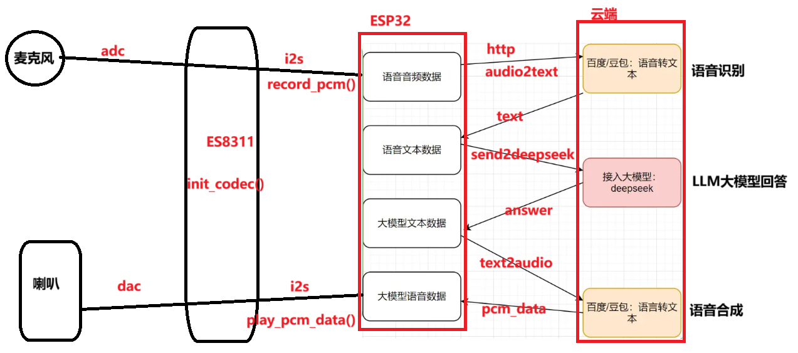
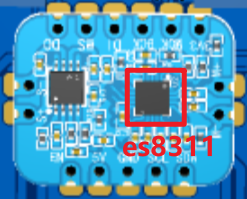
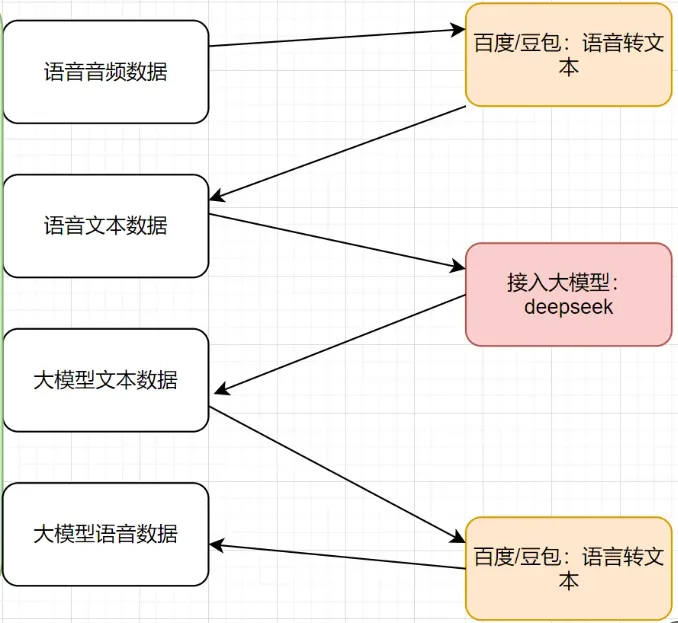
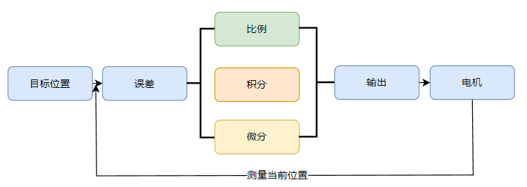

软件设计
本章我们来学习2025年最火爆的AI大模型对话，近年来随着AI技术的发展，语音高效对话变得越来越容易，让我们可以低成本将这项技术应用到实际。
下图我列出了AI大模型对话的经典流程图，我们来解释一下它的过程
- 我们说了句你好，这是一条你好音频数据
- 将音频数据发送给百度/豆包这些平台，交点小钱，它会把语音识别为文本
- 得到识别的你好文本
- 将你好文本，发送给大模型Deepseek,它会产生结果：你好呀，很高兴认识你
- 获得你好呀，很高兴认识你文本
- 将你好呀，很高兴认识你文本，发送给语音合成服务器，将文本转成音频数据
- 获得音频数据，在设备端播放出来即可

I2S简介
I2S（Inter-IC Sound，集成电路内置音频总线）是一种同步串行通信协议，通常用于在两个数字音频设备之间传输音频数据。
ESP32-S3 包含 2 个 I2S 外设。通过配置这些外设，可以借助 I2S 驱动来输入和输出采样数据。
TDM 通信模式(标准)
I2S 总线包含以下几条线路：
- MCLK：主时钟线。该信号线可选，具体取决于从机，主要用于向 I2S 从机提供参考时钟。
- BCLK：位时钟线。用于数据线的位时钟。
- WS：字（声道）选择线。通常用于识别声道。
- DIN/DOUT：串行数据输入/输出线。如果 DIN 和 DOUT 被配置到相同的 GPIO，数据将在内部回环。
参考链接： https://docs.espressif.com/projects/esp-idf/zh_CN/stable/esp32s3/api-reference/peripherals/i2s.html
为什么要学习I2S
- 高质量音频传输：I2S是专为音频设计的通信协议，能够传输高质量的音频数据，适合音频播放、录音等应用。
- 低延迟：I2S支持实时音频处理，适合对延迟要求高的场景，如语音识别或实时音频效果处理。
- ESP32内置I2S外设：ESP32集成了I2S接口，可直接连接麦克风、DAC、ADC等音频设备，简化硬件设计。
- 灵活性：I2S支持多种数据格式和采样率，适应不同的音频需求。
- 音频播放与录音：可用于音乐播放器、录音设备等。
- 语音识别与控制：适合智能音箱、语音助手等需要音频输入输出的设备。
- 音效处理：支持实时音效处理，如均衡器、混音器等。
- 低功耗：ESP32的I2S外设在低功耗模式下仍能高效工作，适合电池供电设备。
- 高性能：ESP32的高性能处理器结合I2S，能够处理复杂的音频任务。
总之I2S有助于开发高质量的音频应用，扩展项目功能，尤其在物联网和智能设备领域具有广泛应用。丰富的资源和强大的硬件支持使得学习和开发更加便捷。
播放音频
在本项目中，我们通过es8311来进行模数转换(ADC)和数模转换（DAC）.
我们通过I2S接口将数字音频传输给es8311,它将数字信号转成模拟信号，播放出去。
麦克风的模拟信号数据被es8311转成数字信号，我们再通过I2S将数据读到单片机中进行处理。
这就是es8311这块芯片的主要作用。

想要驱动ES8311,我们需要I2C和I2S两种接口，I2C是用于对芯片进行设置的，例如我们想设置播放的音量或者采集的音量大小，我们需要通过I2C对芯片进行设置。如果我们上想读取音频数据，或者把音频数据发送给es8311，那么我们需要通过I2S接口
初始化I2C
[codeblock]初始化ES8311
SAMPLE_RATE = 22050
SAMPLE_BITS = 16
[codeblock]初始化I2S
[codeblock]调用播放逻辑
[codeblock]释放资源
[codeblock]录入音频
初始化I2C
[codeblock]初始化ES8311
[codeblock]录音并保存到文件中
[codeblock]播放录音成功的文件
[codeblock]语音识别
将声音识别为文本数据
导入头
[codeblock]工具函数
[codeblock][codeblock]录音
[codeblock]调用语音识别
[codeblock]调用大模型
这里我们调用LLM大模型进行对话。例如
用户说：你好呀！ 大模回答：你好呀，今天想聊点啥。
用户说：今天深圳天气怎么样？ 大模型能准确回答深圳今天上什么天气。
这里我们就选当前比较火爆的deepseek吧，支持国产大模型，从你我做起。 其它的估计咱也调用不起，穷。
[codeblock]语音合成
顾名思义就是将文本转成音频数据。
工具函数
对要进行传输的内容进行编码
[codeblock][codeblock][codeblock]获取token
[codeblock]调用服务
[codeblock]整合示例

整合步骤：
- 连接wifi
- 录制音频pcm，得到音频
- 调用语音识别，得到文本
- 调用deepseek大模型，得到回答文本
- 调用语音合成，得到音频
- 恭喜你，已经熟练掌握了AI大模型对话
如果这个流程还不懂，请从头再看两遍。
如果两遍还不懂, 是时候反省一下自己啦。
拓展知识点
SD卡读写
导入头文件
[codeblock]定义引脚
[codeblock]初始化SDCard
[codeblock]文件读写
[codeblock]数据解析struct.unpack
请阅读：https://www.yuque.com/icheima/python/snglwgao2qwkwn62
解析wav格式音频
偏移量 | 字段名称 | 大小（字节） | 描述 |
0 | Chunk ID | 4 | 固定为 ，表示文件是一个 RIFF 格式的文件。 |
4 | Chunk Size | 4 | 文件总大小减去 8 字节（即文件大小 - 8）。 |
8 | Format | 4 | 固定为 ，表示这是一个 WAV 文件。 |
12 | Subchunk1 ID | 4 | 固定为 ，表示接下来的部分是格式信息。 |
16 | Subchunk1 Size | 4 | 格式信息的大小（通常是 16 字节）。 |
20 | Audio Format | 2 | 音频格式（PCM 为 1，表示未压缩）。 |
22 | Num Channels | 2 | 声道数（1 表示单声道，2 表示立体声）。 |
24 | Sample Rate | 4 | 采样率（如 44100 Hz）。 |
28 | Byte Rate | 4 | 每秒的字节数（ ）。 |
32 | Block Align | 2 | 每个采样点的字节数（ ）。 |
34 | Bits Per Sample | 2 | 每个采样点的位数（如 16 位）。 |
36 | Subchunk2 ID | 4 | 固定为 ，表示接下来的部分是音频数据。 |
40 | Subchunk2 Size | 4 | 音频数据的大小（字节数）。 |
44 | Data | N | 音频数据（从第 44 字节开始）。 |
解析RIFF头
[codeblock]解析FMT
[codeblock]解析DATA
[codeblock]返回音频信息
[codeblock]屏幕显示
现在我想在屏幕上面显示中文，我们就需要将中文字库打包到单片机中。该怎么干呢？请大家按照如下步骤进行：
- 下载字库文件：https://www.alibabafonts.com/#/font
- 下载字库转换工具：https://github.com/peterhinch/micropython-font-to-py
- 执行下面这条转换命令即可获得字库文件
- 将字库文件上传到设备中。
- 在需要显示中文的地方，调用代码写入中文。
初始化屏幕
[codeblock]创建writer
[codeblock]显示中文
[codeblock]编译小智AI
参考连接： https://www.yuque.com/icheima/fm1kog/gq0bv70up0vp9ugo#HrUWP
电机驱动
[codeblock]ADC采样
PID
PID（Proportional-Integral-Derivative）控制器是一种广泛应用于工程领域的控制算法，它包含三个主要部分：比例（P）、积分（I）和微分（D）。通过调整这三个部分来使系统的实际输出更接近期望输出。
- 比例（P）
比例控制根据误差（期望输出与实际输出之差）的大小来调整控制量。误差越大，控制量越大；误差越小，控制量越小。比例控制有助于快速减小误差，但可能导致稳态误差（静态误差）。
- 积分（I）
积分控制对误差进行积分，累积误差值。这有助于消除稳态误差，提高系统的精确度。但积分环节可能导致系统响应过慢和超调（当实际输出超过期望输出时）。
- 微分（D）
微分控制根据误差变化的速度来调整控制量。微分环节有助于减小超调现象，提高系统响应速度和稳定性。
实际应用中，通过调整PID控制器中的比例、积分和微分系数，可以使系统在不同场景下达到更好的控制效果。PID控制器被广泛应用于各种领域，如工业过程控制、航天器姿态控制、机器人运动控制等。
位置式PID
位置式PID控制器是一种常见的实现方式，也称为绝对式PID。它直接根据误差值（期望输出与实际输出之差）计算控制量。位置式PID的输出控制量由比例、积分和微分三部分的和组成，如下所示：
[codeblock]其中，u(t) 是控制量，e(t) 是误差值，Kp、Ki 和 Kd 分别是比例、积分和微分系数。
下面我们来看一下PID的流程图

[codeblock]总结： PID是一个闭环控制算法，运用在各种控制领域
P ： 让系统快速响应
I : 消除系统稳态误差
D : 抑制系统超调